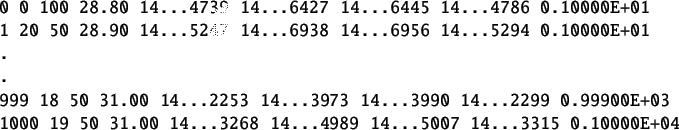

The detailed procedure to perform a local experiment is explained in Chapter![[*]](file:/usr/local/share/lib/latex2html/icons/crossref.png) . A summary of the same is provided in section 1.1. It is same for this section with following changes.
. A summary of the same is provided in section 1.1. It is same for this section with following changes.
- Step1: The working directory is SineTest. Open this directory.
- Step2: Same
- Step3: Same
- Step4: Switch to the SineTest experiment directory and double-click on the file sinetest.sce. This will launch scilab and also open the file sinetest.sce in the scilab editor. Linux users will have to launch scilab manually. They also have to change the working directory to SineTest and then open the sinetest.sce file in the scilab editor.
- Step5: Same
- Step6: Execute the file sinetest.sce. Expect the sine test xcos diagram to open automatically. If this doesnt happen, check the scilab console for error message.
- Step7: Execute the sinetest xcos diagram.
- Step8: Same
The virtual experiment response is shown in figure 4.3. The corresponding data file is shown in table 4.1. The time stamps shown are cut short for better viewing. This data file can be found in SineTest folder for virtual experiments. The name of this file is sine-data-virtual.txt.
Figure 4.3:
Sine test Virtual experiment response
|
 |
Table 4.2:
Sine data obtained after performing virtual Sine Test
|  |
rokade
2017-04-23